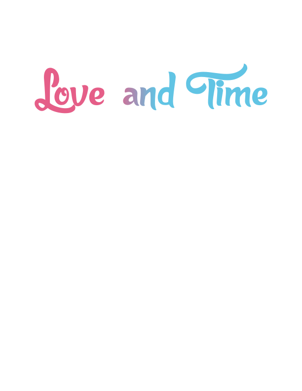

=title("Love and _me") =synopsis("The island is in disaster and everyone is at panic. Almost everyone thinks only themselves. This short story tells how they discovered how valuable something is at times of trouble.")
